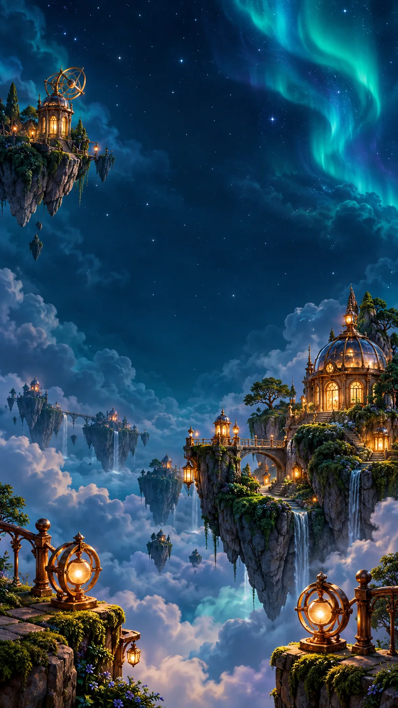
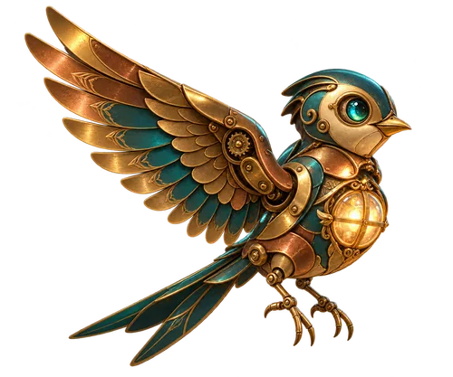
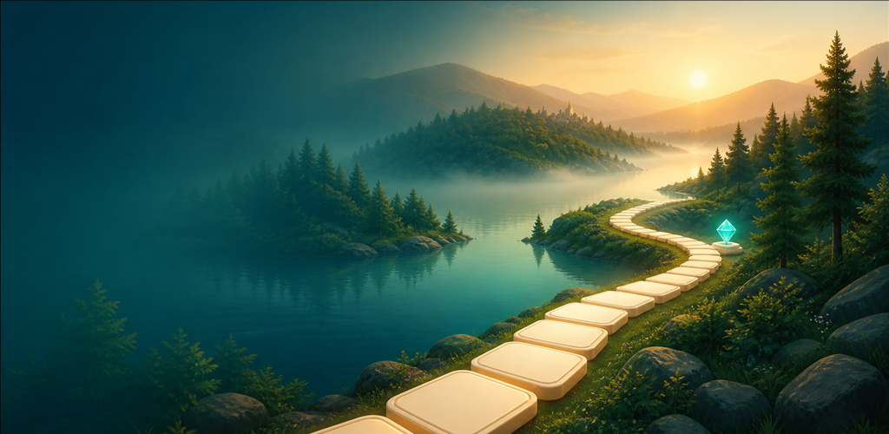

03 / AKSİYON & REFLEKS
SpiraFall
Kuleyi döndür, boşluğu yakala. Kontrollü bir ritimle aşağıya ilerle.
Oyunu ve rehberi aç
PROCİNALP / OYUN DÜNYALARI
Gökyüzündeki adalar, bir masanın etrafında buluşan taşlar, neon kuleler ve kelimeler. Merak ettiğin dünyaya yakından bak.
GÖRSEL: LÜMEN ADALARI · BULUT BAHÇESİ
Geliştirme sürümüne ait oyun sanatı
OYUN VİTRİNİ
Yayımlanmış oyunların yanında, üzerinde çalışılan projelerin görsellerini ve test sürümlerinden seçilmiş sahneleri keşfet. Her projenin durumu kendi sayfasında açıkça belirtilir.

Işığın izinde bir bulmaca yolculuğu.

Projenin mevcut oyun sanatı01 / HİKÂYE & BULMACA
Pırı’nın yolculuğunda her ada yeni bir hikâye ve farklı bir hedef getiriyor. Bulut Bahçesi’nden Gece İskelesi’ne, renkleri eşleştirirken sahnenin bağlantılarını da okumak gerekiyor.


Sahneler gerçek oyun çizicisinin çıktısıdır; fiziksel telefon çekimi değildir. Henüz mağazada yayımlanmadı.
LÜMEN / SAHNE SEÇKİSİ
Görsele dokun, ayrıntıları incele.
02 / MASA OYUNU · TEST SÜRÜMÜ
Yeşil keçe, ahşap ıstaka ve gece manzarası. Mevcut yerel test sürümünün masa düzenini ve oyun seçeneklerini yakından incele.
101 Lounge vitrini
GOOGLE PLAY'DE
SpiraFall ve MATY’nin mevcut mağaza sayfaları, oynanış rehberleri ve tanıtım seçkisi.
03 / AKSİYON & REFLEKS
Kuleyi döndür, boşluğu yakala. Kontrollü bir ritimle aşağıya ilerle.
Oyunu ve rehberi aç
04 / KELİME & DİKKAT
Harfleri birleştir, manzaralar eşliğinde Türkçe kelimelerin peşine düş.
Oyunu ve rehberi açOYUNCUNUN EL KİTABI
Bir oyuna başlamadan önce kontrolünü, hedefini ve takıldığında kullanabileceğin yolları öğren.
AYRI BİR DÜNYA / GEZİ, YAŞAM & KAMERA ARKASI
Oyunların dışında bir keşif alanı. Alperix TV’nin mevcut yayınlarından şehir gezileri, günlük yaşamdan ayrıntılar ve kamera arkasına bir bakış.
 11:45
11:45GEZİ DEFTERİ
Şehir keşfi için kanal arşivinden bir durak. Kapak ve başlık Rotterdam’daki Markthal gezisini konu alıyor.
 2:03
2:03GÜNLÜK KEŞİF
Günlük yaşamın küçük bir ayrıntısı: şişe iadesi deneyimi. Geziye farklı bir gözle bakmak isteyenler için.